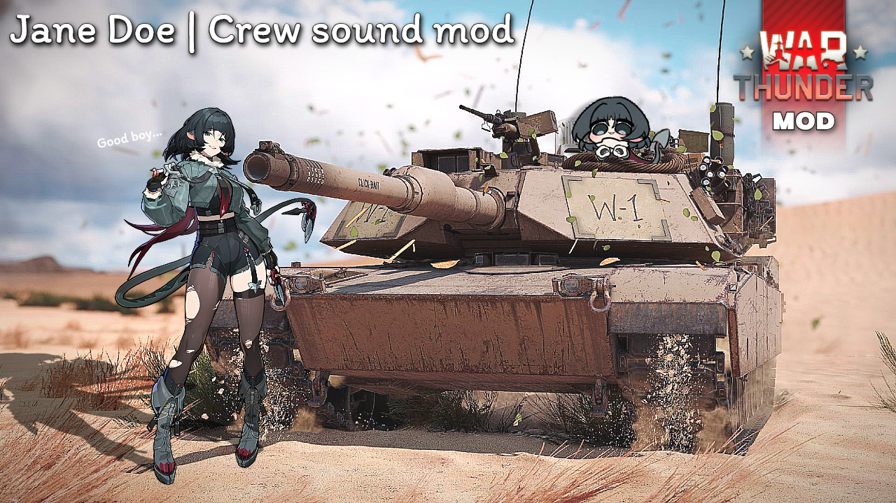

Actually? This website started as a school project, but I decided to turn it into a long-term personal hub. Instead of using platforms like Linktree, I wanted full control over design, content and future expansion.
It serves as a central place for my content, guides and future projects.
I create custom sound mods for War Thunder focused on mainly Anime now, but later hopefully immersion and realism.
One of my projects included collaboration with a voice actress @justjennyexe, which allowed me to push the quality further.
I plan to continue with more Voice Actors/Actresses once current issues with sound mods are resolved. Aswell I plan to make huge Sound Mod project, that will completely change your experience with War Thunder!

I plan to expand into other areas such as custom sights, camouflage designs and other visual improvements.
The goal is to create content that is both useful and visually appealing.
Beyond War Thunder, I’m interested in building my own tools, apps and possibly games.
Right now, the biggest challenge is time and consistency, but I plan to keep improving step by step.